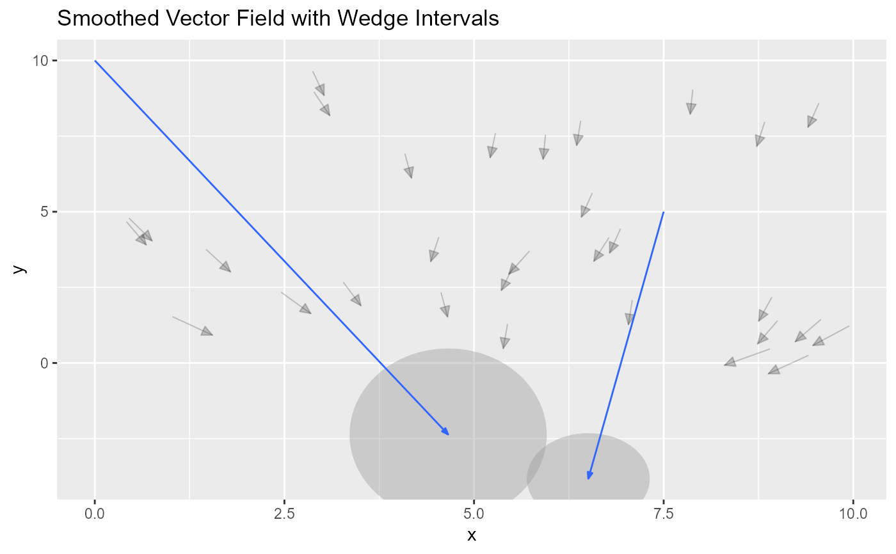
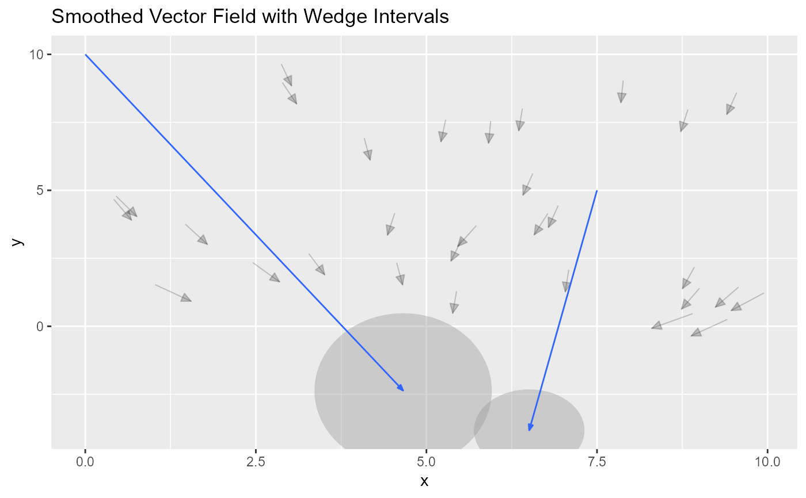

geom_vector_smooth() creates a ggplot2 layer that visualizes a smooth
vector field. It takes raw vector data and applies smoothing (via a
multivariate linear model) to estimate the underlying vector field. This
functionality is analogous to geom_smooth() in ggplot2 but is tailored for
vector data rather than scalar responses.
Usage
geom_vector_smooth(
mapping = NULL,
data = NULL,
stat = "vector_smooth",
position = "identity",
...,
na.rm = FALSE,
show.legend = NA,
inherit.aes = TRUE,
n = c(11, 11),
method = "lm",
se = TRUE,
se.circle = TRUE,
pi_type = "ellipse",
conf_level = c(0.95, NA),
formula = cbind(fx, fy) ~ x * y,
eval_points = NULL,
arrow = grid::arrow(angle = 20, length = unit(0.015, "npc"), type = "closed")
)
GeomVectorSmoothFormat
An object of class GeomVectorSmooth (inherits from GeomSegment, Geom, ggproto, gg) of length 6.
Arguments
- mapping
A set of aesthetic mappings created by
ggplot2::aes(). Required: Must includexandy; vector displacements are defined byfxandfy.- data
A data frame containing the raw vector data.
- stat
The statistical transformation to use on the data (default:
"vector_smooth").- position
Position adjustment, either as a string or the result of a position adjustment function.
- ...
Other arguments passed to
ggplot2::layer()and the underlying geometry/stat.- n
An integer vector specifying the number of grid points along each axis for smoothing.
- method
Character. Specifies the smoothing method. Currently, the only supported method is
"lm", which fits a multivariate linear model to predict the vector displacements (fx,fy) fromxandy.- se
Logical. If
TRUE, prediction (confidence) intervals are computed and plotted.- se.circle
Logical. If
TRUE, circles are drawn around the origin of each vector to represent the radius of the prediction interval.- pi_type
Character. Determines the display style for prediction intervals:
"wedge"(default): Angular wedges are drawn."ellipse": Ellipses are used to represent the covariance of the predictions. Ifpi_typeis set to"ellipse"andeval_pointsisNULL, it will revert to"wedge".
- conf_level
Numeric. Specifies the confidence level for the prediction intervals. Default is
0.95.- formula
A formula specifying the multivariate linear model used for smoothing. The default is
cbind(fx, fy) ~ x * y.- eval_points
A data frame of evaluation points. If provided, these specify the grid where the smoothing model is evaluated. If
NULL, a grid is generated based onn.- arrow
A
grid::arrow()specification for arrowheads on the smoothed vectors.- geom
The geometric object used to render the smoothed vector field (defaults to GeomVectorSmooth).
Aesthetics
geom_vector_smooth() supports the following aesthetics
(required aesthetics are in bold):
x: The x-coordinate of the vector's starting point.y: The y-coordinate of the vector's starting point.fx: The horizontal component of the vector displacement.fy: The vertical component of the vector displacement.color: The color of the vector lines.linewidth: The thickness of the vector lines.linetype: The type of the vector lines (e.g., solid, dashed).alpha: The transparency level of the vectors.arrow: An aesthetic that can be used to modify arrowhead properties.
Details
Multivariate Linear Model:
The "lm" method fits a multivariate linear model to predict vector
displacements (fx and fy) based on the coordinates x and y, including
interaction terms (x * y). This model smooths the raw vector data to
provide an estimate of the underlying vector field.
Prediction Intervals:
When se = TRUE, prediction intervals are computed for the smoothed vectors.
Two types of intervals are supported:
Ellipse: Ellipses represent the joint uncertainty (covariance) in the predicted
fxandfy.Wedge: Wedges (angular sectors) indicate the range of possible vector directions and magnitudes. The type of interval displayed is controlled by
pi_type, and the confidence level is set viaconf_level.
Examples
# Function to generate vectors
generate_vectors <- function(v) {
x <- v[1]
y <- v[2]
c(
sin(x) + sin(y) + rnorm(1, 5, 1),
sin(x) - sin(y) - rnorm(1, 5, 1)
)
}
# Set seed for reproducibility
set.seed(123)
# Create sample points and compute vectors
sample_points <- data.frame(
x = runif(30, 0, 10),
y = runif(30, 0, 10)
)
result <- t(apply(sample_points, 1, generate_vectors))
sample_points$xend <- result[, 1]
sample_points$yend <- result[, 2]
sample_points$fx <- sample_points$xend - sample_points$x
sample_points$fy <- sample_points$yend - sample_points$y
sample_points$distance <- sqrt(sample_points$fx^2 + sample_points$fy^2)
sample_points$angle <- atan2(sample_points$fy, sample_points$fx)
# Define evaluation points
eval_points <- data.frame(
x = c(0, 7.5),
y = c(10, 5)
)
# Example 1:
ggplot(sample_points, aes(x = x, y = y)) +
geom_vector(aes(fx = fx, fy = fy, color = NULL), center = FALSE, alpha = 0.2) +
geom_vector_smooth(aes(fx = fx, fy = fy), n = 5) +
ggtitle("Smoothed Vector Field")
#> Warning: ! eval_points is `NULL`; changing pi_type from "ellipse" to "wedge".
 # Example 2: Ellipse with eval_points
ggplot(sample_points, aes(x = x, y = y)) +
geom_vector(aes(fx = fx, fy = fy, color = NULL), center = FALSE, alpha = 0.2) +
geom_vector_smooth(aes(fx = fx, fy = fy), eval_points = eval_points, conf_level = c(0.9)) +
ggtitle("Smoothed Vector Field with Ellipse Intervals")
# Example 2: Ellipse with eval_points
ggplot(sample_points, aes(x = x, y = y)) +
geom_vector(aes(fx = fx, fy = fy, color = NULL), center = FALSE, alpha = 0.2) +
geom_vector_smooth(aes(fx = fx, fy = fy), eval_points = eval_points, conf_level = c(0.9)) +
ggtitle("Smoothed Vector Field with Ellipse Intervals")
 # Example 3: Wedge with eval_points
ggplot(sample_points, aes(x = x, y = y)) +
geom_vector(aes(fx = fx, fy = fy, color = NULL), center = FALSE, alpha = 0.2) +
geom_vector_smooth(aes(fx = fx, fy = fy), eval_points = eval_points, pi_type = "ellipse") +
ggtitle("Smoothed Vector Field with Wedge Intervals")

# Example 3: Wedge with eval_points
ggplot(sample_points, aes(x = x, y = y)) +
geom_vector(aes(fx = fx, fy = fy, color = NULL), center = FALSE, alpha = 0.2) +
geom_vector_smooth(aes(fx = fx, fy = fy), eval_points = eval_points, pi_type = "ellipse") +
ggtitle("Smoothed Vector Field with Wedge Intervals")
